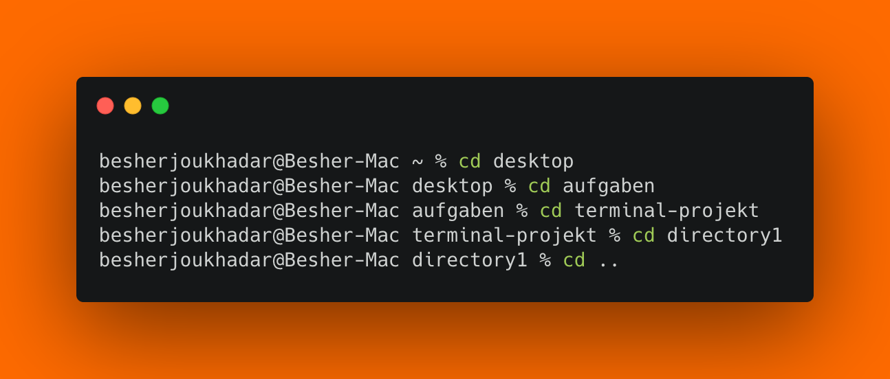

ls — List directory contents
ls zeigt den Inhalt eines Verzeichnisses an.
cd wechselt das Arbeitsverzeichnis. Ohne Argumente wechselt „cd“ in das Heimatverzeichnis des Users
cd . . Wechselt in das Verzeichnis unter dem aktuellen Verzeichnis. Würden wir uns in „/terminal-projekt/directory1“ befinden, landen wir dann in „/terminal-projekt/“
cd ../.. Wechselt das zwei Verzeichnis unter dem aktuellen Verzeichnis.
pwd zeigt das aktuelle Arbeitsverzeichnis, hier gibt es keine besonders relevanten Optionen
cp kopiert Dateien und Verzeichnisse. Dabei wird immer erst die Quelle und dann das Ziel angegeben.
mv verschiebt Dateien und Verzeichnisse. Es wird immer erst die Quelle und dann das Ziel angegeben.
mv dadurch können Dateien oder Verzeichnisse auch ganz einfach umbenannt werden
ls zeigt den Inhalt eines Verzeichnisses an.
ls -a zeigt den versteckten Inhalt eines Verzeichnisses an.
mkdir erstellt Verzeichnisse oder auch ganze Ordnerstrukturen auf einem schlag
touch erstellt eine Datei
rm löscht eine Datei
rm -r löscht einen Ordner